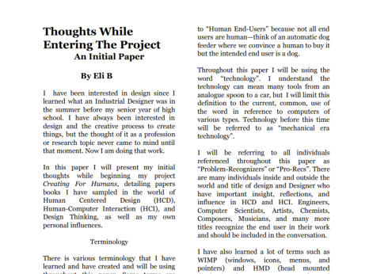

why do this?
The shift to video call could have been an exploration on private vs public space on it’s own—one’s
home is now an office, availability is stretched, family life exposed, etc.—however, I
wanted to create something more interactive than a research paper.
I decided to take a day that is the start of the work-week but is also casually antagonized and I
turned it into an archived memory. Each response is a life, a schedule, a concrete “was”. Stories
and speculation from the past still influence the development and expectations of HCI today. Using
a simple HTML site inspired by early web pages, Project Oswald presents the stories of an ordinary
day.
where am I?
With “normal” and “daily life” completely shifting, I wanted to capture
fragments of what was. We can become so comfortable in a routine to the
point where it becomes automatic. When COVID-19 changed our routines, I felt
that there was a focus on “there is change happening” and a nostalgia for
“what was” but what even “was”?
Project Oswald
I was no longer able to install an interactive piece, and even if I wanted to build the
project, all on campus workspaces were closed. I took the concept of time, and how
lost I now was within it, and made a new project.
The Project(s)
With the gray area of “defining public space” and schedule adjustments, I merged my 2 projects
into 1. Building off of a location tracking clock from fiction, I intended to build a clock that would
allow professors and busy individuals with offices to place a clock on their door and remotely
update co-workers and students on their location.
The clock is a public instillation while one’s location is more private. The project would pull from our
expectation of future technology in fiction and fantasy, our sense of privacy and what information
others are entitled to, as well as how much privacy a user is willing to give up for convenience or to
live out that future technology fantasy. Professor Stables ( my art advisor ) and Professor Crouser ( my
computer science advisor ) assisted me throughout the process and even provided a pendulum
clock which I jokingly named
Oswald.
The week I began looking for funding and ordering parts was the week Smith College closed.
Initial Research
“Privacy” was already a complex issue that I never expected to
find answers to; rather to explore how we define it and where
the line is between private a public. When I thought about
HCD, the line was blurry but recognizable, but in HCI I’m not
even sure if it’s a line or a spectrum.
This focus on private vs public really helped me to narrow the
scope of HCD and HCI during my research. After reading
papers and design books, I wrote a preliminary report and
moved onto my physical projects.
In my Spring semester, 2020, I began a research project exploring HCD and HCI with a
focus on private vs public space. I intended to write papers, and do two projects: one
focusing on private space and the other on public space. Then my college closed.
All images are owned by Eli Boahen, and cannot be used without express permission from them.

 00:00
00:00



 . . it’s a Weasley Clock.
. . it’s a Weasley Clock.